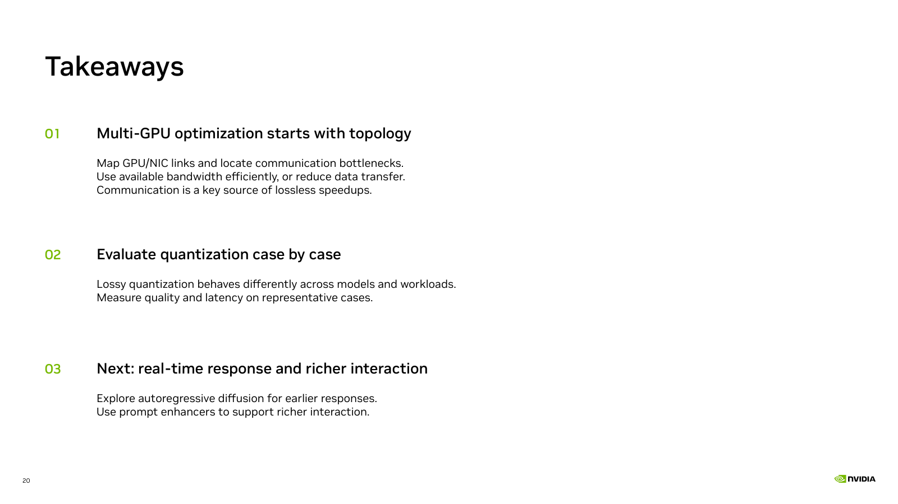

Online takeaway slide · Recorded demo

Map GPU/NIC links and locate communication bottlenecks.
Use available bandwidth efficiently, or reduce data transfer.
Communication is a key source of lossless speedups.
Lossy quantization behaves differently across models and workloads.
Measure quality and latency on representative cases.
Explore autoregressive diffusion for earlier responses.
Use prompt enhancers to support richer interaction.
The final point describes future work, not an implemented improvement in the recorded demo.